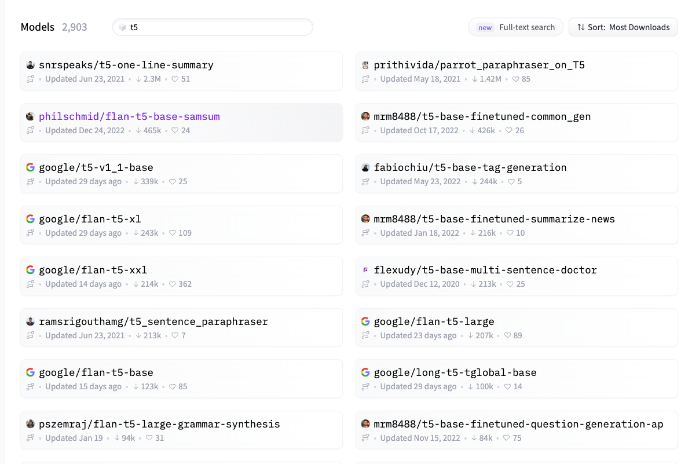
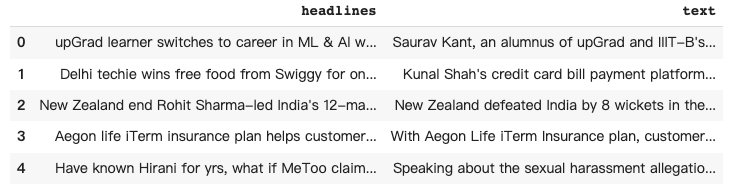
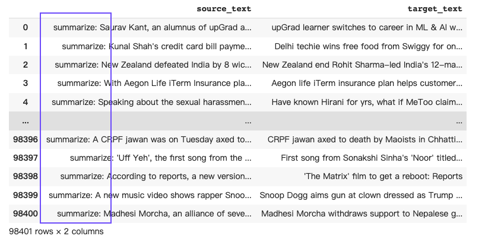

simpleT5 是基于 PyTorch 实现的 T5 模型库，旨在为用户提供一种简单、易用、可定制的 T5 模型工具。T5（Text-to-Text Transfer Transformer）是一种基于 Transformer 架构的自然语言处理模型，由 Google Brain 团队开发。T5 模型采用了 encoder-decoder 架构，其中 encoder 将输入文本编码为向量，decoder 则从该向量生成目标文本。

simpleT5 的设计目标是尽可能地减少 T5 模型的使用门槛，以方便用户在自然语言处理任务中快速应用 T5 模型，从而节省大量的模型开发时间和成本。
simpleT5 提供了一个简单的 API 接口，用户只需要提供输入文本和模型参数，即可轻松地使用 T5 模型进行文本转换任务，如文本摘要、机器翻译、对话系统等。simpleT5 还提供了一些预训练模型，包括 T5-small、T5-base 和 T5-large 等不同规模的模型，用户可以根据任务需求选择合适的模型。
除此之外，simpleT5 还提供了一些有用的工具和功能，如文本预处理、数据集加载、训练日志记录等，以帮助用户更轻松地进行模型训练和调试。simpleT5 的开发者们还提供了详细的文档和示例代码，以帮助用户更快地上手使用该库。
总之，simpleT5 为用户提供了一种快速、方便、可定制的 T5 模型工具，可以帮助用户在自然语言处理任务中更加高效地应用 T5 模型，节省大量的开发时间和成本。
安装
!pip3 install --upgrade simplet5
快速上手
t5模型有很多，如下图，今天以huggingface中公开的模型 snrspeaks/t5-one-line-summary为例， 展示 「根据传入的摘要内容生成对应的标题」。

# pip install --upgrade simplet5
from simplet5 import SimpleT5
model = SimpleT5()
model.load_model("t5","snrspeaks/t5-one-line-summary")
Run
Global seed set to 42
Downloading: 100%| | 0.00/1.36k [00:00<?, ?B/s]
Downloading: 100%| | 0.00/850M [00:00<?, ?B/s]
Downloading: 100%| | 0.00/1.84k [00:00<?, ?B/s]
Downloading: 100%| | 0.00/773k [00:00<?, ?B/s]
Downloading: 100%| | 0.00/1.32M [00:00<?, ?B/s]
Downloading: 100%| | 0.00/1.74k [00:00<?, ?B/s]
根据英文摘要生成标题
abstract = """We describe a system called Overton, whose main design goal is to support engineers in building, monitoring, and improving production
machine learning systems. Key challenges engineers face are monitoring fine-grained quality, diagnosing errors in sophisticated applications, and
handling contradictory or incomplete supervision data. Overton automates the life cycle of model construction, deployment, and monitoring by providing a
set of novel high-level, declarative abstractions. Overton's vision is to shift developers to these higher-level tasks instead of lower-level machine learning tasks.
In fact, using Overton, engineers can build deep-learning-based applications without writing any code in frameworks like TensorFlow. For over a year,
Overton has been used in production to support multiple applications in both near-real-time applications and back-of-house processing. In that time,
Overton-based applications have answered billions of queries in multiple languages and processed trillions of records reducing errors 1.7-2.9 times versus production systems.
"""
model.predict(abstract)
Run
['Overton: Building, Deploying, and Monitoring Deep Machine Learning Systems']
根据摘要生成多个标题
abstract = """We describe a system called Overton, whose main design goal is to support engineers in building, monitoring, and improving production
machine learning systems. Key challenges engineers face are monitoring fine-grained quality, diagnosing errors in sophisticated applications, and
handling contradictory or incomplete supervision data. Overton automates the life cycle of model construction, deployment, and monitoring by providing a
set of novel high-level, declarative abstractions. Overton's vision is to shift developers to these higher-level tasks instead of lower-level machine learning tasks.
In fact, using Overton, engineers can build deep-learning-based applications without writing any code in frameworks like TensorFlow. For over a year,
Overton has been used in production to support multiple applications in both near-real-time applications and back-of-house processing. In that time,
Overton-based applications have answered billions of queries in multiple languages and processed trillions of records reducing errors 1.7-2.9 times versus production systems.
"""
#根据摘要生成5个标题
n = 5
model.predict(abstract,
num_return_sequences=n,
num_beams=n+1)
Run
['Overton: Building, Deploying, and Monitoring Deep Machine Learning Systems',
'Overton: Building, Deployment, and Improving Production Machine Learning Systems',
'Overton: Building, Deploying, and Monitoring Machine Learning Systems for Engineers',
'Overton: Building, Deploying, and Monitoring Machine Learning Systems',
'Overton: Building, Deployment, and Monitoring Deep Machine Learning Systems']
simpleT5微调
在 T5 模型的预训练阶段，它使用了巨大的文本语料库进行无监督的训练，以学习将输入文本转换为输出文本的能力。
预训练阶段结束后，T5 模型可以通过微调或迁移学习的方式用于各种下游 NLP 任务中，以实现最先进的性能表现。
import pandas as pd
from sklearn.model_selection import train_test_split
path = "https://raw.githubusercontent.com/Shivanandroy/T5-Finetuning-PyTorch/main/data/news_summary.csv"
df = pd.read_csv(path)
df.head()

# simple5库传入的数据是DataFrames，必须含 "source_text" 和 "target_text"这两个字段。
df = df.rename(columns={"headlines":"target_text", "text":"source_text"})
df = df[['source_text', 'target_text']]
# T5 模型微调时候，source_text 数据都加入了前缀关键词summarise， 告诉 T5模型要做总结类任务的微调。
df['source_text'] = "summarize: " + df['source_text']
df

查看数据的形状
train_df, test_df = train_test_split(df, test_size=0.2)
train_df.shape, test_df.shape
((78720, 2), (19681, 2))
开始进行 T5 模型的微调
from simplet5 import SimpleT5
model = SimpleT5()
model.from_pretrained(model_type="t5", model_name="t5-base")
model.train(train_df=train_df[:5000],
eval_df=test_df[:100],
source_max_token_len=128,
target_max_token_len=50,
batch_size=8, max_epochs=3, use_gpu=True)
Downloading: 100%
792k/792k [00:36<00:00, 21.6kB/s]
Downloading: 100%
1.39M/1.39M [00:02<00:00, 641kB/s]
Downloading: 100%
1.20k/1.20k [00:00<00:00, 3.50kB/s]
Downloading: 100%
892M/892M [00:32<00:00, 27.4MB/s]
GPU available: True, used: True
TPU available: False, using: 0 TPU cores
LOCAL_RANK: 0 - CUDA_VISIBLE_DEVICES: [0]
| Name | Type | Params
-----------------------------------------------------
0 | model | T5ForConditionalGeneration | 222 M
-----------------------------------------------------
222 M Trainable params
0 Non-trainable params
222 M Total params
891.614 Total estimated model params size (MB)
Validation sanity check: 0%
0/2 [22:52<?, ?it/s]
Global seed set to 42
Epoch 2: 100%
638/638 [04:07<00:00, 2.57it/s, loss=1.02, v_num=0, val_loss=1.200, train_loss=1.130]
Validating: 100%
13/13 [00:01<00:00, 7.43it/s]
Validating: 100%
13/13 [00:01<00:00, 7.29it/s]
Validating: 100%
13/13 [00:01<00:00, 7.30it/s]
# let's load the trained model for inferencing:
model.load_model("t5","outputs/SimpleT5-epoch-2-train-loss-0.9478", use_gpu=True)
text_to_summarize="""summarize: Rahul Gandhi has replied to Goa CM Manohar Parrikar's letter,
which accused the Congress President of using his "visit to an ailing man for political gains".
"He's under immense pressure from the PM after our meeting and needs to demonstrate his loyalty by attacking me,"
Gandhi wrote in his letter. Parrikar had clarified he didn't discuss Rafale deal with Rahul.
"""
model.predict(text_to_summarize)
['Rahul responds to Goa CM accusing him of using visit for political gain']